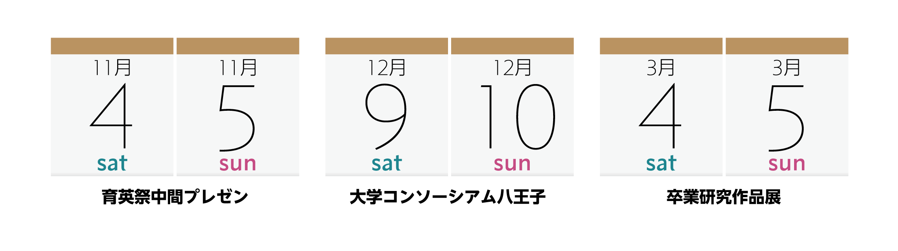

Schedule

卒研展関連イベントのスケジュールについて
2017年度の卒業研究作品展の関連イベントは以下の通りです。
-
育英祭中間プレゼン
- ポスターセッションを主とした中間発表です。
- 2017年11月4日(土)/5日(日) 10:00 – 16:00(育英祭の開催時間に準じます)
- サレジオ高専校舎棟4階 424教室にて
-
大学コンソーシアム八王子 学生発表会
- 一部の学生が、ポスターセッションとプレゼン発表を行います。
大学コンソーシアム八王子の主催となりますので、詳細は大学コンソーシアム八王子のホームページを御覧ください。 - 2017年12月9日(土)/10日(日) 10:00 – 16:00(詳しくはホームページをご参照ください)
- 八王子市学園都市センターにて
- 一部の学生が、ポスターセッションとプレゼン発表を行います。
-
卒業研究作品展
- 1年間の卒業研究の集大成を発表します。
- 2018年3月4日(土)/5日(日) 10:00 – 16:00
- サレジオ高専 サレジアンホールにて